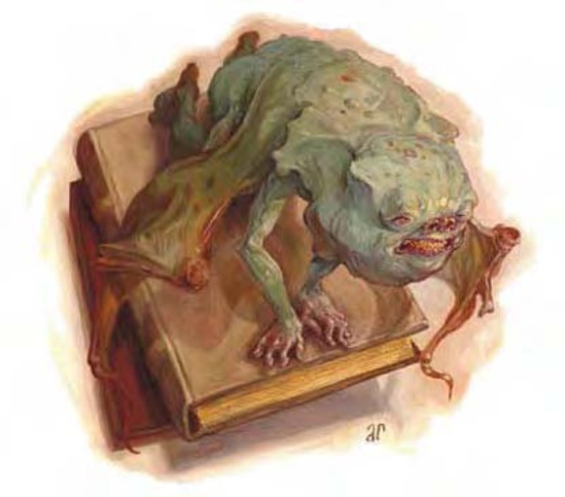

这种生物有着模糊的类人形体，身高约18英寸，翼展2英尺。皮肤粗糙多疣，嘴里长满细针般的尖齿。
魔造仆役是由法师制造的小型仆役。这种生物虽然战斗力弱小，却是绝佳的间谍、传讯者与斥候。
魔造仆役的细部外观由创造者决定。
魔造仆役不只是用来完成指派任务的工具，他们是创造者的衍生物与其拥有相同的阵营与基本天性。魔造仆役不能说话，但在制作过程中会与创造者建立心灵感应，他们知道所有主人知道的事，也能将其所见所闻回传给主人，最远可达1500英尺。魔造仆役绝对不会自愿离开主人超过这个距离，但可被强迫移开。被强行移离主人的魔造仆役会尽其所能恢复与主人之间的联系。毁灭魔造仆役将对其主人造成2d10点伤害。若魔造仆役的创造者被杀，他也会死亡，躯体迅速地溶化成一滩灵液。
魔造仆役会落到目标上头，用毒牙啮咬攻击之。
毒素 (特异)：每次造成伤害后，魔造仆役就会注入毒素 (强韧检定的DC=13)。初始伤害为睡眠1分钟，后续伤害为多睡眠5d6分钟。豁免检定DC的调整值与体质调整值相同，包含+2种族加值。
魔造仆役由黏土、灰烬、曼陀罗根、泉水与一滴创造者的血液混合而成。材料共须50金币，制造者可以自行制作，也可以请人来做。组装身体时需要通过「手艺 (雕塑)」或「手艺 (陶艺)」检定 (DC=12)。身体制作完成后必须以额外的魔法仪式活化，此仪式必须使用特别的实验室或工坊，建设费大约等于炼金师的实验室，须500金币。若魔造仆役的身体由创造者亲手制作，则制作与活化仪式可以同时进行。
制造2HD以上的魔造仆役时，每多1HD须额外花费2000金币。
制造构装生物 (见第318页)，「秘法眼」、「镜影术」、「修复术」。施法者等级至少4；交易价格― (非卖品)；制造耗费1050金币+78XP。
| 生命骰 | 2d10 (11HP) |
| 先攻 | +2 |
| 速度 | 20英尺 (4格)、飞行50英尺 (良好) |
| 防御等级 | 14 (+2敏捷、+2体型)、接触14、措手不及12 |
| 基本攻击/擒抱 | +1 / -8 |
| 攻击 | 啮咬+2近战 (1d4-1附加毒素) |
| 全力攻击 | 啮咬+2近战 (1d4-1附加毒素) |
| 占据/触及 | 2.5英尺 / 0英尺 |
| 特殊攻击 | 毒素 |
| 特殊能力 | 构装特性、黑暗视觉60英尺、昏暗视觉 |
| 豁免 | 强韧+0、反射+4、意志+1 |
| 属性 | 力量8、敏捷15、体质―、智力10、感知12、魅力7 |
| 技能 | 躲藏+14、聆听+4、侦察+4 |
| 专长 | 快速反射 |
| 环境 | 任何 |
| 组织 | 单独 |
| 宝藏 | 无 |
| 阵营 | 任何 (与创造者同) |
| 进化 | 3-6HD (超小型) |
| 等级修正值 | ― |